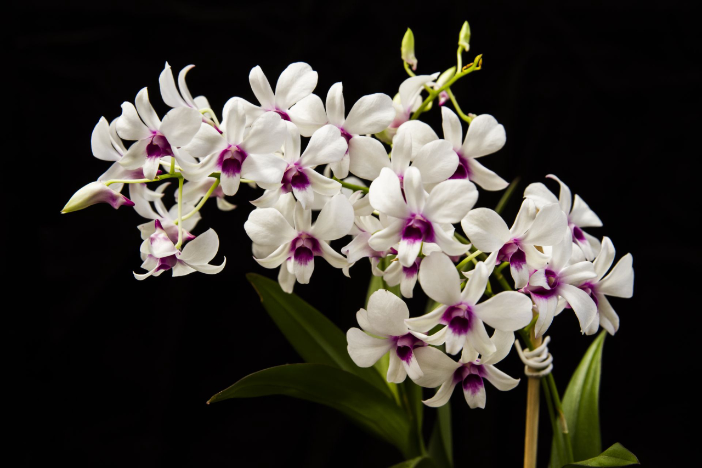

Orquídea Rara
Cattleya labiata


Características
- Família: Orchidaceae
- Origem: Mata Atlântica brasileira
- Época de floração: Primavera
- Altura: 30-45 cm
Curiosidades
Conhecida como "rainha do nordeste", esta orquídea foi descoberta em 1818 e é uma das espécies mais cobiçadas por colecionadores. Suas flores grandes e perfumadas podem durar até 3 semanas.
Escaneie este QR Code no jardim para acessar esta página